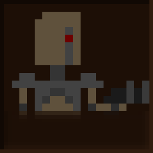

Воин 1 батальона Обычный воин, самая распространённая модель армии 'Завоевателей'.
Воин 2 батальона Обычный воин, но с более сильным оружием, чем у воина 1 батальона. Одна из самых распространённых моделей армии 'Завоевателей'.
Воин 3 батальона Воин с оружием ближнего боя. Был снят с массового производства из-за частой ненадобности.

Воин для дальнего боя Полезная модель воинов, но их производство было не дешёвым.
Воин ближнего боя Более полезный вариант 'Воина 3 батальона', устойчив к выстрелам из многих орудий.

Тяжёлый воин-стрелок был создан на основе 'Воина ближнего боя', поэтому тоже устойчив к выстрелам.
Воин-маг Тестовая модель воина, созданная в единственном экземпляре
Генерал армии 'Завоевателей' Главнокомандующий 'Завоевателей'. Был создан из остатков воинов после поражения завоевателей, имеет 4 руки и два ближних оружия
Охранник генерала Выпускается в небольшом количестве для охраны генерала.
Снайпер Используется для битв на дальних расстояниях.
Воин-турель Был создан на основе турели в единственном экземпляре.
Тяжёлый воин Воин с очень тяжёлой бронёй. Выдерживает выстрелы и удары почти всех орудий. Его недостатки: слабое вооружение и медленная скорость.